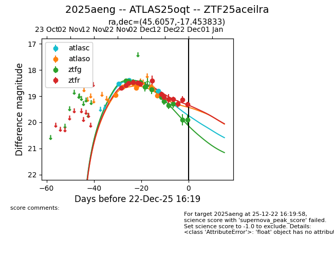
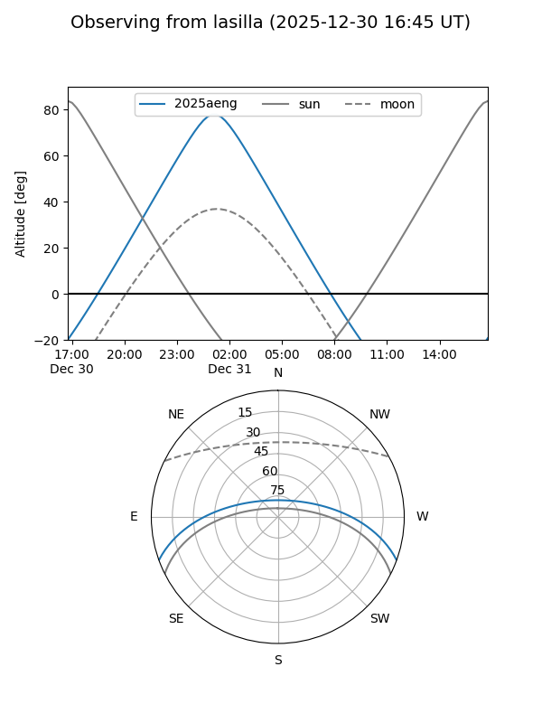
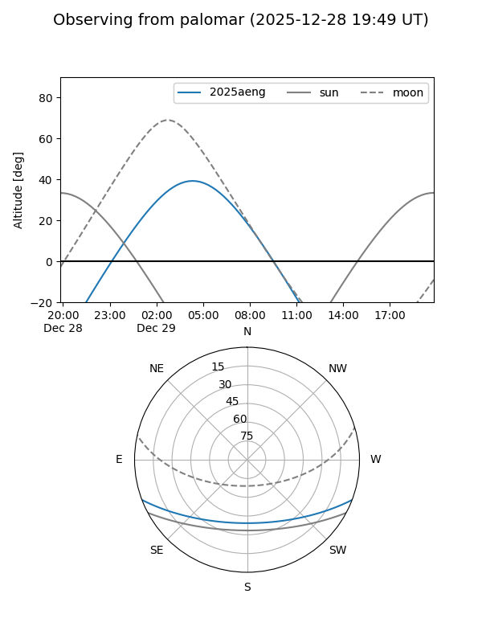
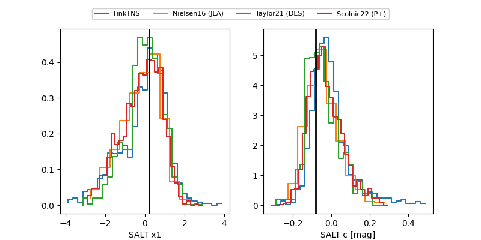

2025aeng
Target 2025aeng at 2025-12-20 04:39
Aliases and brokers:
FINK: fink-portal.org/ZTF25aceilra
Lasair: lasair-ztf.lsst.ac.uk/objects/ZTF25aceilra
ALeRCE: alerce.online/object/ZTF25aceilra
TNS: wis-tns.org/object/2025aeng
YSE: ziggy.ucolick.org/yse/transient_detail/2025aeng
alt names
ZTF25aceilra (ztf,fink_ztf)
2025aeng (tns,yse)
ATLAS25oqt (atlas)
Coordinates:
equatorial (ra, dec) = 45.6057,-17.45383
equatorial (HMS+DMS) = 03:02:25.38,-17:27:13.80
galactic (l, b) = (202.0802,-58.30411)
Flags:
Photometry:
last atlasc=18.80, atlaso=18.97, ztfg=19.30, ztfr=19.13
4 atlasc, 8 atlaso, 10 ztfg, 13 ztfr detections
Lightcurve

Visibility


Additional plots
